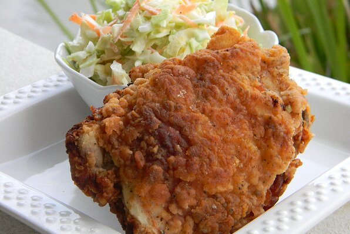

Ir a inicio
Pollo frito de brezo

Descripción
Una receta maravillosa de pollo frito con un sabor sureño propio. El toque de suero de leche picante bajo una
capa
crujiente de delicia hace que este pollo se destaque.
Ingredientes
- 6 muslos de pollo
- 2 cucharadas de sal
- 1 litro de agua fría, para cubrir
- 2 tazas de suero de leche frío
- 1 huevo batido
- 1 cucharadita de mezcla de condimentos para pollo
- 3 tazas de harina para todo uso
- 2 cuartos de aceite vegetal para freír
Pasos
- Coloque los muslos de pollo y las baquetas en un tazón grande, cubra con agua fría y mezcle con sal. Cubra y
refrigere
de 8 horas a toda la noche.
- Enjuague bien el pollo. Mezcle el suero de leche, el huevo batido y 1 cucharadita de condimento para pollo
en un tazón
grande hasta que estén bien combinados.
- Coloque los trozos de pollo en la mezcla de suero de leche y refrigere de 30 minutos a 1 hora.
- Caliente el aceite vegetal en una freidora o cacerola grande a 375 grados F (190 grados C).
- Coloque la harina y 2 cucharadas de condimento para pollo en un tazón poco profundo y mezcle hasta que se
combinen.
Retire el pollo del baño de suero de leche, sacuda el exceso de suero de leche y presione en harina. Elimine
el exceso
de harina.
- Coloque suavemente el pollo en aceite caliente, 3 o 4 piezas a la vez; Freír el pollo hasta que esté dorado,
de 12 a 15
minutos por lote.
- Retire los trozos de pollo a una rejilla para enfriar colocada sobre toallas de papel para eliminar el
exceso de aceite
antes de servir.